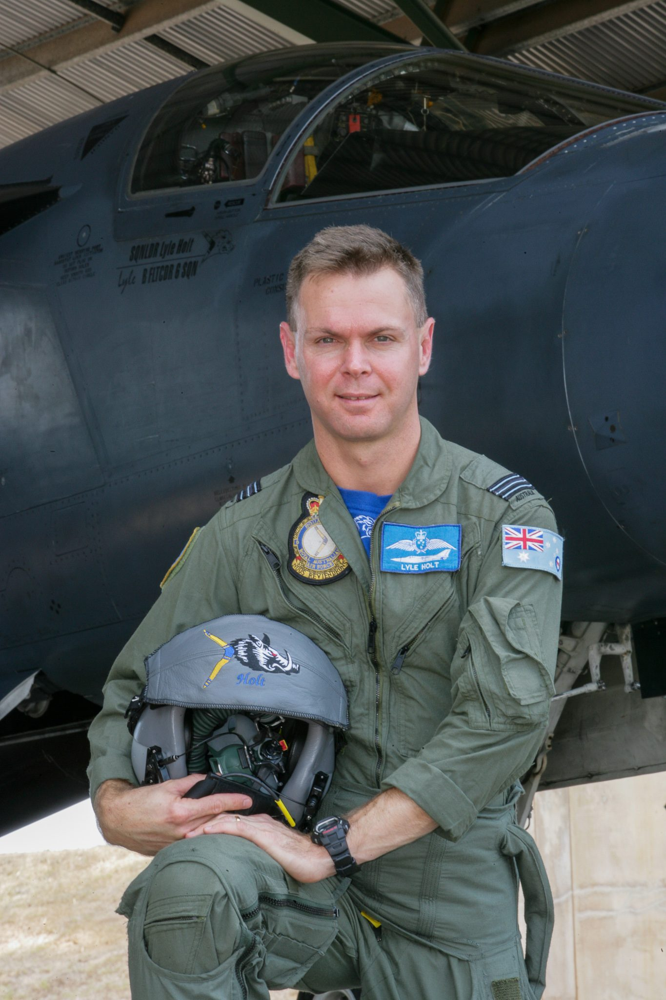
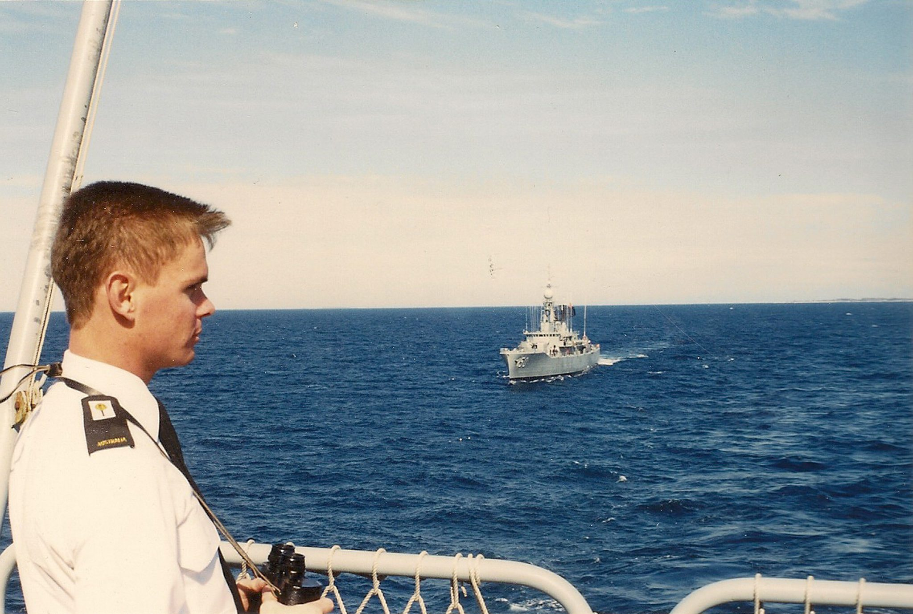
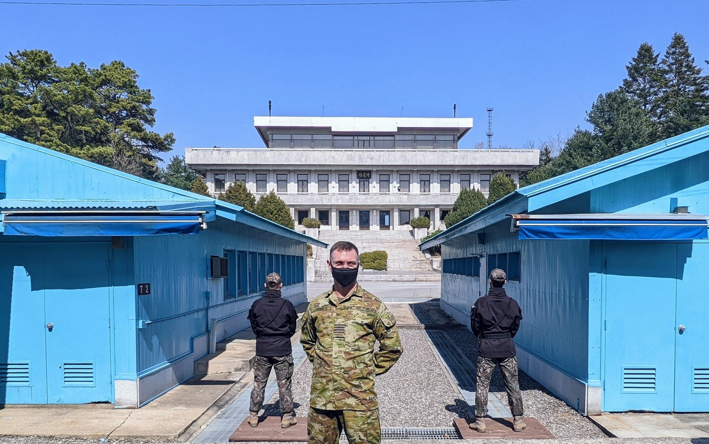
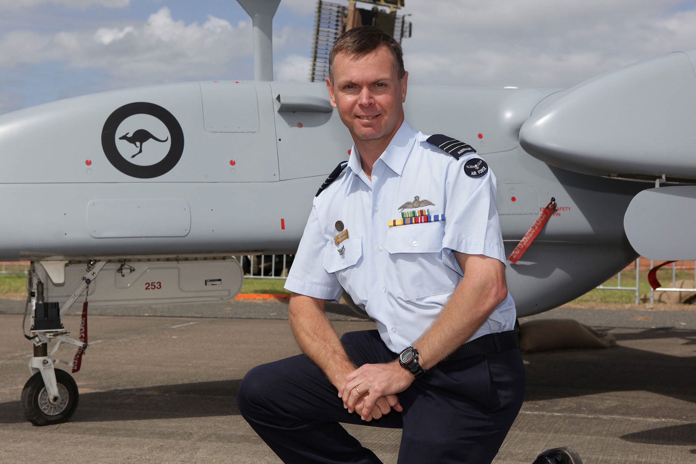
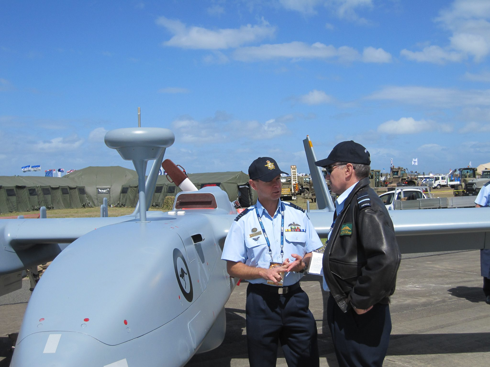
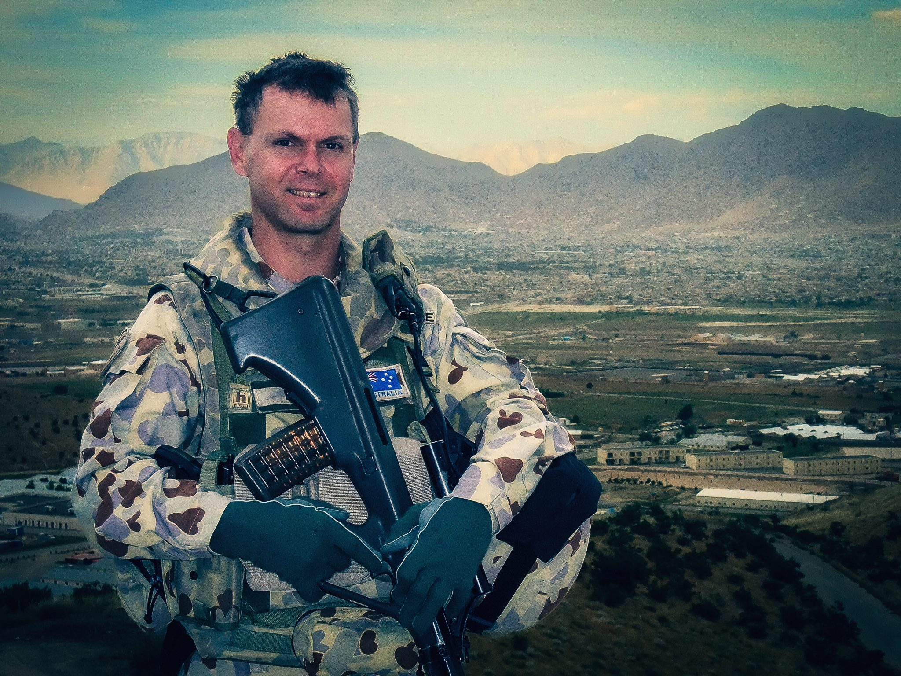
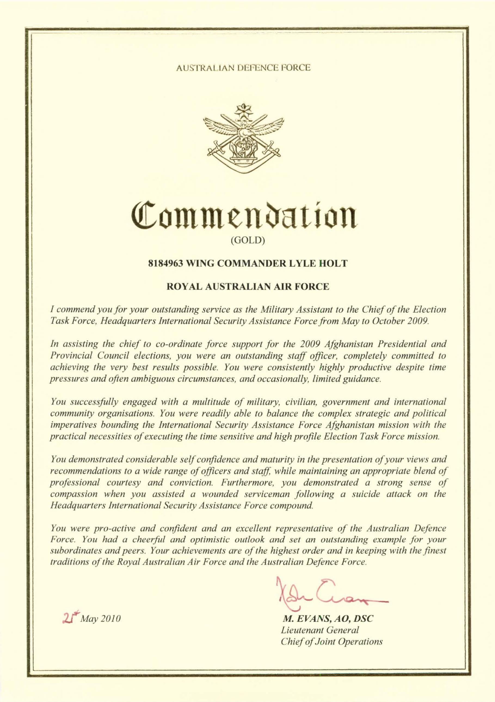
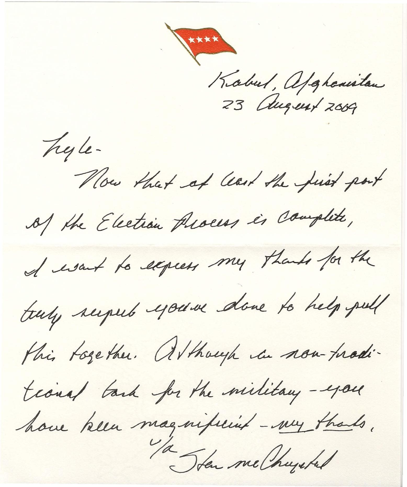

Lyle's Lens is led by Lyle Holt, who spent 34 years in environments requiring rapid situational analysis and clear communication. That experience shaped his visual approach to photography.
He learned to look for what isn't being said, to consider a situation from several perspectives…
Over that career, Lyle developed disciplined practices in preparation, decision-making under uncertainty, and distinguishing between what is interesting and what is important — the same judgement now applied to building visual evidence for elite sport.
Senior command roles included coordinating UN Command (Rear) in Japan and serving as Director of Plan Jericho. He flew the F-111 weapons system and built Number 5 Flight for uncrewed aircraft operations.
Joint recipient of the 2012 Prime Minister's Award for Excellence in Public Sector Management.
CASA Remote Operator's Certificate holder and qualified Remote Pilot, operating a DJI Mavic 3 Pro for aerial work.
Capture Magazine — Australasia's Top Emerging Photographers, 2024. Australian Photography Magazine — Mono Awards, 2023. Member, International Association of Art Photographers.





“You were consistently highly productive despite time pressures and often ambiguous circumstances…”
ADF Gold Commendation, Chief of Joint Operations, 21 May 2010“Although a non-traditional task for the military — you have been magnificent.”
General Stanley A. McChrystal, 23 August 2009

Kabul, 2009. What access to sport made possible for a girl here — and what its absence cost her — is the throughline running from this deployment to Lyle's work in women's elite sport today.
Lyle's Lens Photography is a veteran-owned and Indigenous-owned Australian business, based on Ngunnawal Country, Canberra.
Lyle's service has been featured in Our Mob Served: Aboriginal and Torres Strait Islander Histories of War and Defending Australia (Aboriginal Studies Press, 2019), the Serving Country Indigenous veterans portrait project, and a family service feature in The Guardian Australia.
His family's history of service — from his grandfather at Gallipoli, through his uncle's wartime imprisonment on the Sumatran Death Railway and later service in Korea, to his own 34 years — is documented by the United Nations Command and the Australian War Memorial.

Based in Canberra. Active deployments worldwide.